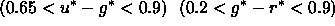

In regions of particularly poor seeing, the colors of stars were occasionally systematically off, especially when earlier versions of photo were used. This caused the target selection algorithms that select outliers in color-color space to choose an inordinate number of targets. We corrected for this by manually culling targets from the list.
In particular, target candidates were culled from run 752 (Target v2.2a) in 61 fields due to problems caused by poor seeing. In fields with 5 or more quasar candidates, we removed candidates which were not also selected as galaxy targets, in the following categories:
Similarly, target candidates in runs 94, 125 (Target v2.7) were culled from 52 fields. Additionally, all QSO_HIZ candidates in run 94 in camera column 6 were removed from the list. This was necessary due to a problem with the characterization of the point spread function in the version of the psp used at the time.
After the plates from run 94/125 were drilled, we discovered that many quasar candidates were targeted, due to an error in the target selection code. Spectra were collected for these targets, but they may be removed from quasar analyses by rejecting objects which satisfy the criterion: .